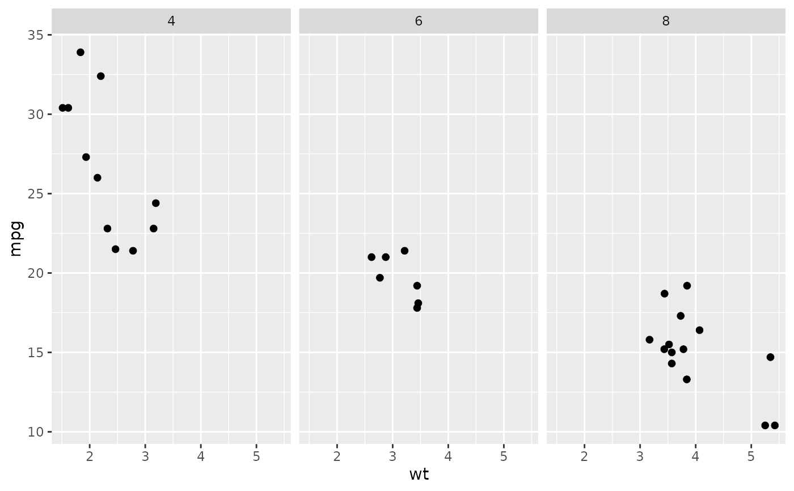
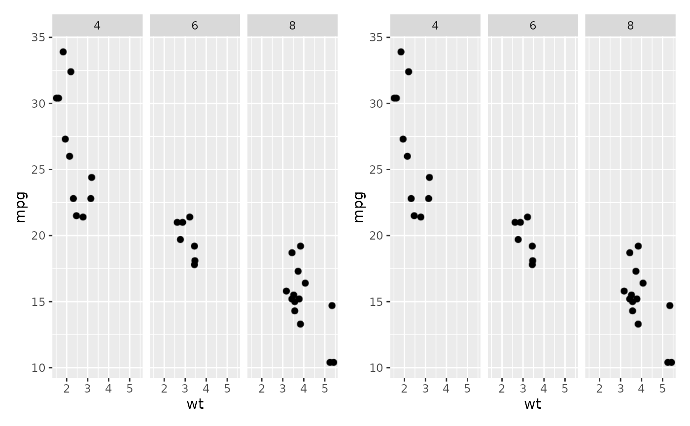

Render the point and line layers of a ggplot or patchwork object as
raster images, while the axes, text, legends and the remaining layers stay
vector. A figure with a large number of elements then stays small and quick
to draw, in the file and in the browser. For a patchwork composite the
sub-plots are rasterised as well, because a composite carries only the first
sub-plot's layers itself. The rasterisation is done by
ggrastr::rasterise().
Usage
rasterise_plot(
plot,
layers = c("Point", "Tile", "Path", "Line", "Segment"),
dpi = 300,
recurse = TRUE
)Arguments
- plot
A
ggplotorpatchworkobject.- layers
Layer types to rasterise, named without the
Geomprefix, so the default"Point"matchesgeom_point()layers. Add"Violin","Boxplot"or"Crossbar"to rasterise those layers as well.- dpi
Resolution of the rasterised layers, in dots per inch. Default is
300.- recurse
Whether to rasterise the sub-plots of a
patchworkcomposite. Default isTRUE.
Value
The plot object with its heavy layers rasterised. Objects that are
neither a ggplot nor a patchwork are returned unchanged, with a warning.
Examples
panel <- ggplot2::ggplot(mtcars, ggplot2::aes(wt, mpg)) +
ggplot2::geom_point() +
ggplot2::facet_wrap(~cyl)
rasterise_plot(panel)

rasterise_plot(patchwork::wrap_plots(panel, panel), dpi = 150)
